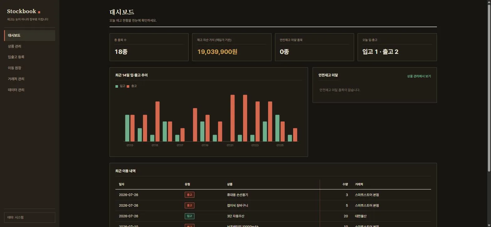
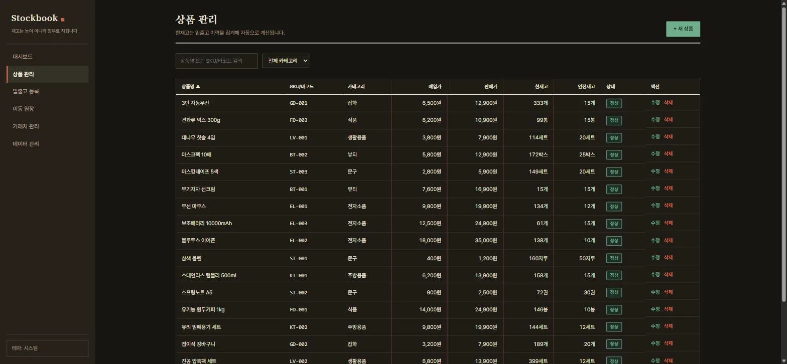
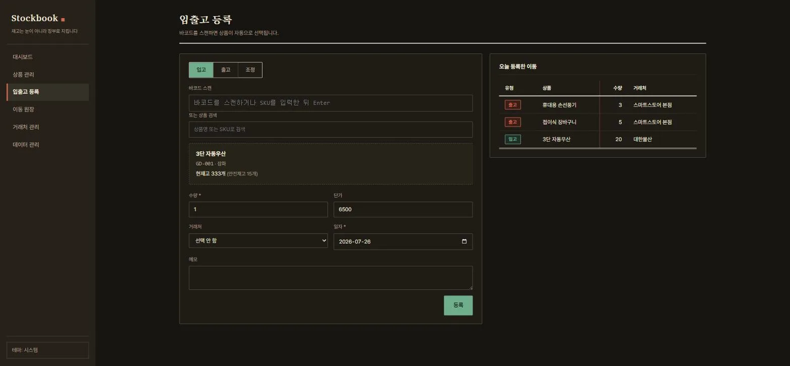
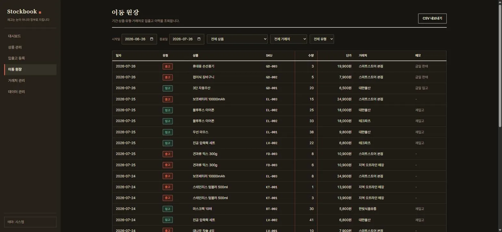
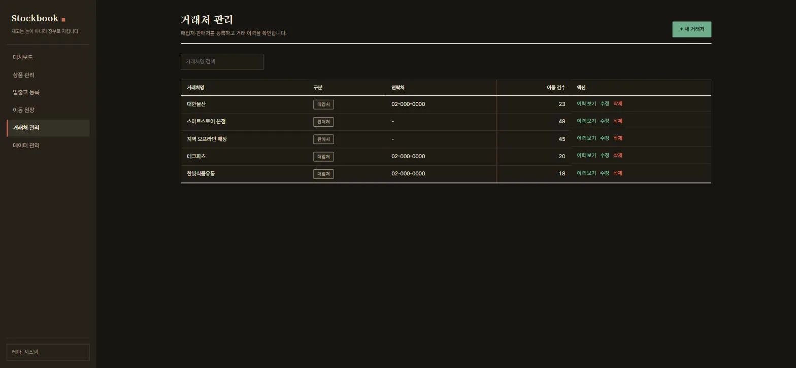

CASE STUDY/stockbook
입고·출고·조정을 장부로 기록해 재고를 지키는 윈도우 데스크톱 앱
설치해서 쓰는 윈도우 앱이라 웹 데모 대신 실제 구동 화면을 올립니다. 아래는 다크 테마입니다.





작은 매장과 창고의 재고는 눈대중과 엑셀로 관리되기 쉽습니다. 현재고 칸을 손으로 고치는 순간 실제 입출고 이력과 숫자가 어긋나기 시작하고, 어긋난 재고는 발주 실수와 품절로 이어집니다. Stockbook은 현재고를 저장하는 칸 자체를 없앴습니다. 입고·출고·조정을 기록한 이동 원장을 그때그때 집계해 현재고를 계산하므로, 이력과 숫자가 어긋날 길이 구조적으로 없습니다. 재고는 눈이 아니라 장부로 지킵니다.
Tauri 2(Rust)와 SQLite, 바닐라 TypeScript로 만들었습니다. 계정도 클라우드도 네트워크 호출도 없는 완전 로컬 앱이라 재고 데이터가 컴퓨터 밖으로 나가지 않고, MSI·NSIS 설치 파일로 배포합니다. 첫 실행이면 예시 데이터(상품 42종, 3개월치 입출고)가 자동으로 채워져 설치 직후부터 화면이 살아 있습니다.
현재고 계산은 두 경로를 씁니다. 출고 초과처럼 입력을 막아야 하는 안전 검증은 순수 함수로, 목록과 대시보드는 SQL 집계로 계산하고, 두 경로가 항상 같은 값을 내는지 Rust 테스트 36개로 교차 검증합니다. CSV는 한글 엑셀에서 바로 열리도록 UTF-8 BOM으로 내보내고, 가져오기는 행 단위로 오류를 수집해 한 행의 실수가 전체를 중단시키지 않게 했습니다. 사용자 입력이 HTML로 해석되는 경로를 없애기 위해 innerHTML을 쓰지 않는 DOM 헬퍼로만 화면을 구성했습니다.
디자인은 "종이 원장"입니다. 장부지 바탕과 먹, 숫자 컬럼 왼쪽의 붉은 세로 괘선, 표 아래의 마감 이중선, 인주 도장풍 상태 뱃지 — 실제 장부의 문법을 그대로 옮겼습니다. 폰트는 로컬 번들이라 오프라인에서도 동일하게 보이고, 라이트·다크 테마를 지원합니다.